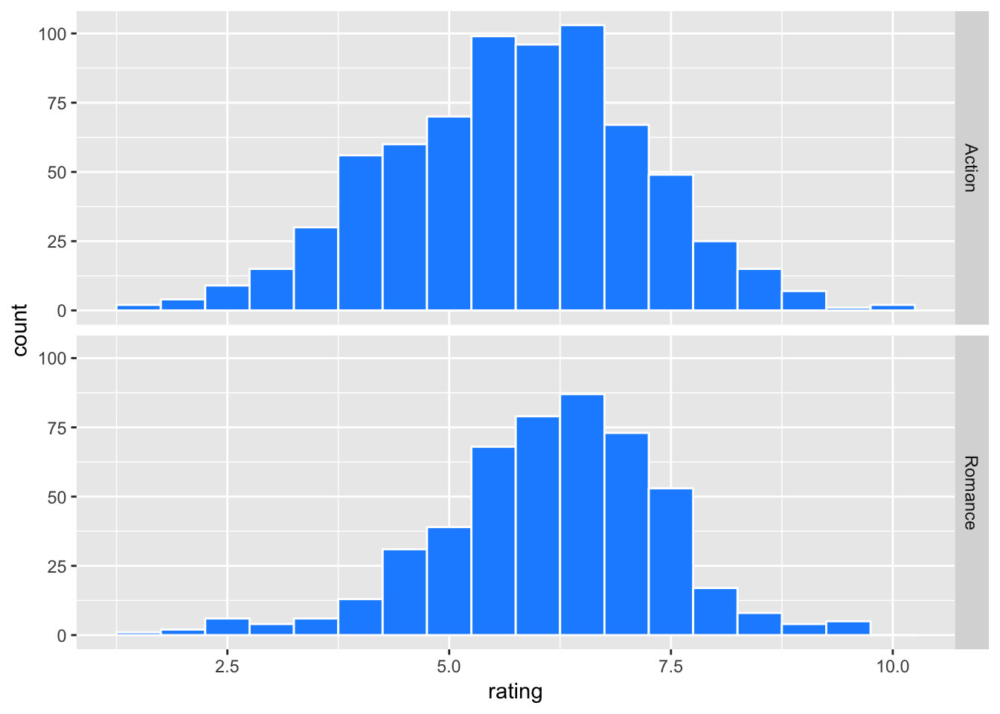
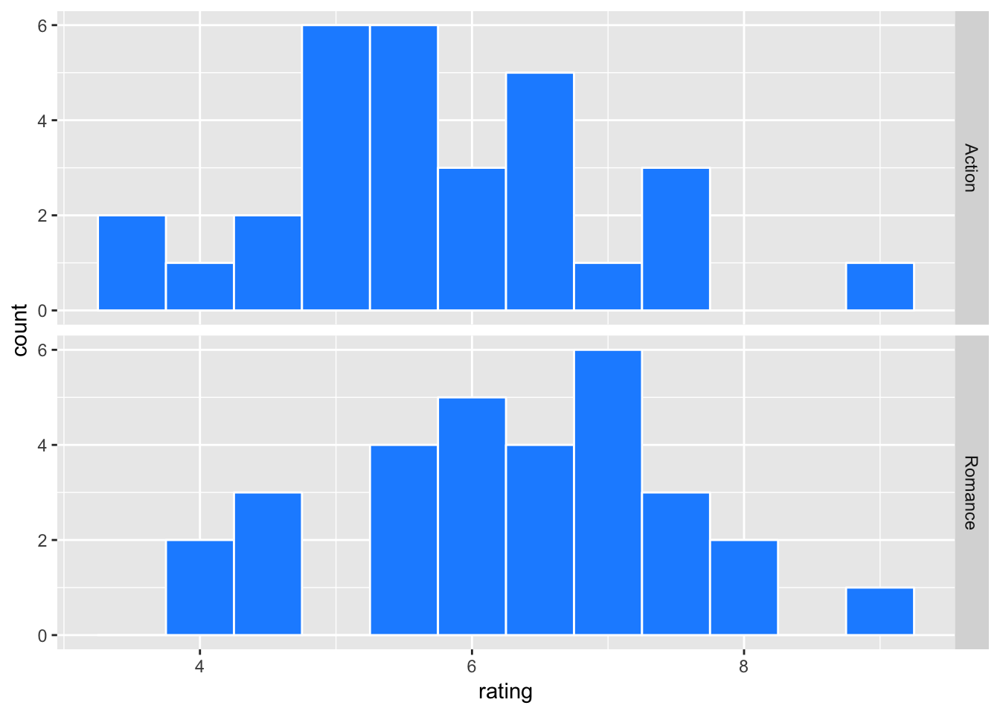
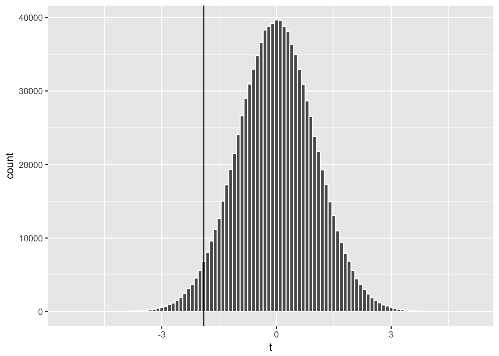
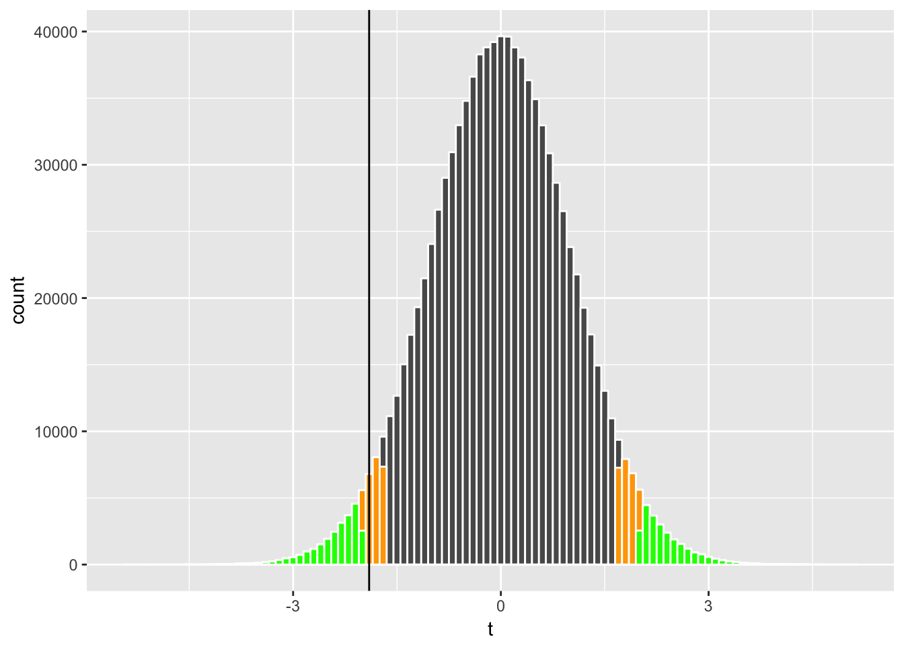
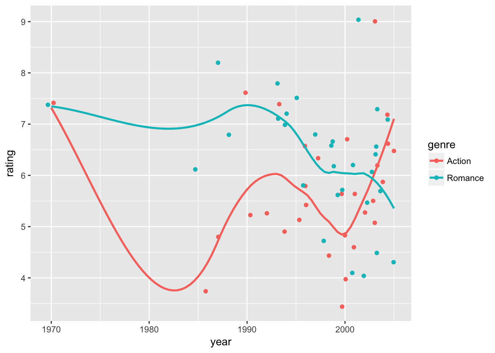
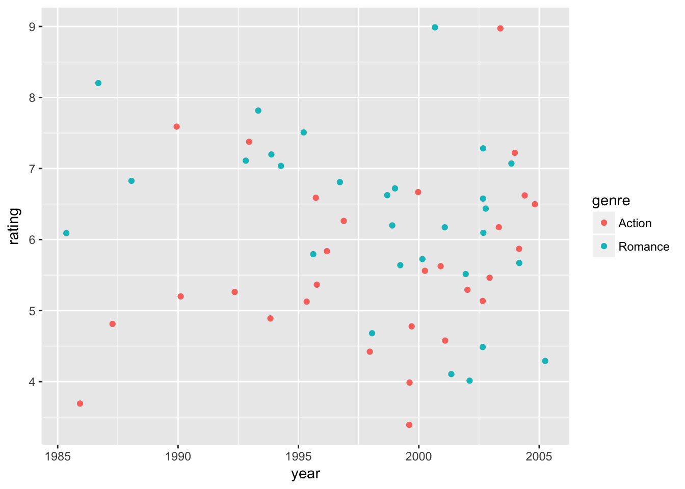
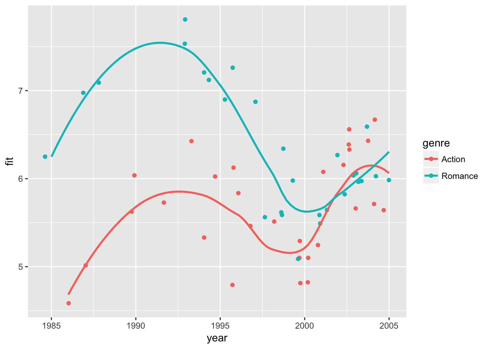

4.2 Action, Romance, and Chicks
Materials
This session covers t-test, bootstrapping, and linear regressions in the same context, so that you can learn these concepts together and how to apply them in R.
We will use a dataset on movies.
movies2 <- movies %>%
dplyr::select(title, year, budget, rating, Action, Romance) %>%
filter((Action ==1 | Romance ==1),
!( Action == 1 & Romance == 1),
budget > 0, year >= 1970) %>%
mutate(budget = budget/10^6)
summary(movies2)## title year budget rating
## Length:1206 Min. :1970 Min. : 0.001 Min. :1.500
## Class :character 1st Qu.:1992 1st Qu.: 3.500 1st Qu.:5.025
## Mode :character Median :1998 Median : 15.000 Median :6.000
## Mean :1996 Mean : 27.549 Mean :5.902
## 3rd Qu.:2002 3rd Qu.: 40.000 3rd Qu.:6.800
## Max. :2005 Max. :200.000 Max. :9.800
## Action Romance
## Min. :0.0000 Min. :0.0000
## 1st Qu.:0.0000 1st Qu.:0.0000
## Median :1.0000 Median :0.0000
## Mean :0.5887 Mean :0.4113
## 3rd Qu.:1.0000 3rd Qu.:1.0000
## Max. :1.0000 Max. :1.0000The extracted data movies2 contain IMDB ratings of Action and Romance movies (excluding those of both Action and Romance genres) that are released between 1970 and 2005 and have known budgets. Action and Romance movies are about 59% and 41% of the data respectively. The average rating is 5.9.
Let’s look at the distribution of the release years and ratings in this dataset.
movies2$year %>% table## .
## 1970 1971 1972 1973 1974 1975 1976 1977 1978 1979 1980 1981 1982 1983 1984
## 12 10 11 8 11 7 9 10 7 4 11 16 10 8 13
## 1985 1986 1987 1988 1989 1990 1991 1992 1993 1994 1995 1996 1997 1998 1999
## 27 17 18 15 22 22 19 20 30 32 51 55 64 77 64
## 2000 2001 2002 2003 2004 2005
## 80 94 110 103 103 36We see that more data are available for years 1999-2004 than other years.
movies2 %>% ggplot(aes(x=rating)) +
geom_histogram(binwidth = 0.5, color = "white", fill = "dodgerblue")
The distribution of rating is somewhat skewed to the left.
Let’s see how Action and Romance movies compare.
movies2 <- movies2 %>% mutate(genre = ifelse(Action==1, "Action", "Romance"))
movies2 %>% ggplot(aes(x=rating)) +
geom_histogram(binwidth = 0.5, color = "white", fill = "dodgerblue") +
facet_grid(genre ~ .)
movies2 %>% group_by(genre) %>%
summarise(mean = mean(rating),
sd = sd(rating),
n = n())## # A tibble: 2 × 4
## genre mean sd n
## <chr> <dbl> <dbl> <int>
## 1 Action 5.729859 1.419404 710
## 2 Romance 6.147581 1.262879 496Romance genre gets a slightly higher average rating than Action. For the sake of discussion, suppose that movies2 is the population (or the universe) of our movie data, meaning that it contains all possible observations (movies) that fit our criteria (i.e. Action or Romance movies released in 1970-2005 with known budgets). Then, the population mean ratings for Action and Romance movies are 5.73 and 6.15 respectively.
Now consider a sampling world. In almost all situations, the researcher does not have population data and has to work with a sample drawn from the population. Knowing that what we have is only a sample, we make statistical inferences for the property of the population. For example, using a sample of Action and Romance movies, we can compare their average ratings at certain statistical significance.
Let’s simulate our sampling world. Here we randomly draw 30 observations from each genre and calculate summary statistics.
set.seed(2017) # Fix a starting point of random number generations for reproducibility
movie_sample <- movies2 %>%
group_by(genre) %>%
sample_n(30)
movie_sample %>% ggplot(aes(x=rating)) +
geom_histogram(binwidth = 0.5, color = "white", fill = "dodgerblue") +
facet_grid(genre ~ .)
movie_sample %>% group_by(genre) %>%
summarize(mean = mean(rating),
std_dev = sd(rating),
n = n()) %>% kable(digits = 3)| genre | mean | std_dev | n |
|---|---|---|---|
| Action | 5.730 | 1.248 | 30 |
| Romance | 6.333 | 1.208 | 30 |
Here is an another view;
movie_sample %>% ggplot(aes( x = genre, y = rating)) + geom_point() + geom_boxplot()
To compare the mean ratings between genres, a common practice is to test the equality of means, say \(\mu_A\) and \(\mu_R\) of Action and Romance movies respectively.
The null and alternative hypotheses are:
\(H_0: \mu_A = \mu_R\) (equivalently, \(\mu_A - \mu_R = 0\))
\(H_A: \mu_A \neq \mu_R\)
t-test
Let’s begin with reviewing some fundamental concepts of statistics. Let \(y_{i}\) is an independently and identically distributed (i.i.d.) random variable for observation \(i = 1, .., N\) drawn from some distribution with population mean \(\mu = E[y_i]\) and standard deviation \(\sigma = \sqrt{E[(y_i - \mu)^2]}\) where \(E[.]\) is an expectation operator over the random variable. The sample mean and standard deviation of \(y_{i}\) are defined as \[\bar{y} = \frac{\sum_i y_i}{N}, \quad s =\sqrt{\frac{\sum_i (y_{i} - \bar{y})^2}{(N-1)}}.\]
We commonly take the average \(\bar{y}\), which serves as an unbiased estimate of \(\mu\). Yet, how close is \(\bar{y}\) to \(\mu\)? The statistical theory gives us a probabilistic answer for inferring population mean \(\mu\). For example, if we know that \(y_i\) is normally distributed with mean \(\mu\) and standard deviation \(\sigma\), then it follows that the sample mean \(\bar{y}\) is normally distributed with mean \(\mu\) and standard deviation \(\sigma/\sqrt{N}\). The distribution of an estimate like this is called sampling distribution, and in special cases it is exactly known.
With known* \(\mu\) and \(\sigma\), we know how fast the sample mean \(\bar{y}\) approaches to the population mean \(\mu\) as the sample size \(N\) increases. This is done by calculating the z-statistic
\[z = \frac{\bar{y} - \mu}{\sigma/\sqrt N}\]
and comparing it to the standard normal distribution table. In other words, to make an inference, we look at the relationship of \(\bar{y}\), \(\mu\), \(\sigma\), and \(N\) as described in the z-statistic, for which the shape of the distribution is known. This allows us to infer the representation of observed \(\bar{y}\) if we were to repeat random samples of size \(N\) and calculate the sample mean many times.
In most situations, we do not know \(\mu\) or \(\sigma\) of the population, and we are unsure whether the underlying distribution is really normal. But, that’s okay. We can still make inferences for the population mean \(\mu\).
Under some regularity conditions (e.g. the existence of a finite mean and variance of the random variable), the Central Limit Theorem tells us that regardless the underlying distribution, the sampling distribution of \(\bar{y}\) is approximately normal.
In a world with unknown \(\mu\) or \(\sigma\), we approximate the standard normal distribution with a Student’s t distribution. The t-statistic is calculated as \[t = \frac{\bar{y} - \mu}{s/\sqrt N}\]
where \(s\) is the consistent estimate of \(\sigma\), and we compare it to the t distribution table at \(N-1\) degrees of freedom (one degree of freedom is reduced for the estimate \(s\)). The Student’s t distribution is fatter-tailed than the standard normal distribution (due to the estimated standard error on the denominator), and it approaches to the standard normal distribution as the sample size \(N\) increases. For given significance level \(\alpha\), the \(1-\alpha\) confidence interval is
\[t_{N, 1-\alpha/2} \le \frac{\bar{y} - \mu}{s/\sqrt N} \le t_{N, \alpha/2}\]
where \(t_{N, 1-\alpha/2}\) and \(t_{N, 1-\alpha/2}\) are the lower and upper bounds of the t-statistic and are found in the t-distribution table. Since the t-distribution is symmetric, \(- t_{N, 1-\alpha/2} = t_{N, 1-\alpha/2}\). For example, at \(\alpha=0.05\) and \(N>1000\), we have \(t_{N, 1-\alpha/2} \approx -1.96\) and \(t_{N, 1-\alpha/2}=1.96\). Thus, for a large \(N\), the confidence interval of \(\mu\) is given by
\[ \bar{y} - 1.96 \:\: s/\sqrt{N} \le \mu \le \bar{y} + 1.96 \:\: s/\sqrt{N}.\]
Let’s get back to the comparison of ratings between genres. How do we test our hypothesis \(\mu_A = \mu_R\)? Intuitively, we can make estimates of \(\mu_A\) and \(\mu_R\) by the corresponding sample means \(\bar{y}_A\) and \(\bar{y}_R\). Then, it’s a matter of making statistical inferences about \(\bar{y}_A - \bar{y}_R\) for how close they would be to \(\mu_A - \mu_R\). We calculate the t-statistic of \(\bar{y}_A - \bar{y}_R\) and infer the probability of rejecting \(H_0: \mu_A - \mu_R = 0\).
Let \(\bar{y}_{A}\) and \(s_A\) be the sample mean and standard deviation of ratings for Action movies and \(\bar{y}_{R}\) and \(s_R\) be those for Romance movies. A typical approach called Welch’s t-test statistic uses \[t = \frac{\bar{y}_A - \bar{y}_R}{s_\Delta}\]
where \[s_\Delta = \sqrt{\frac{s_A^2}{N_A} + \frac{s^2_R}{N_R}}\]
is sort of a joint standard deviation of \(y_{iA} - y_{iR}\). Its degree of freedom has a somewhat complicated form but is approximately \((N_A-1) + (N_R-1)\) in many situations. For your information (not need to memorize), it is formally given as \[d.f. = \frac{s^2_\Delta}{(s_A^2/N_A)^2/(N_A - 1) + (s_R^2/N_R)^2/(N_R - 1) }.\]
The Welch’s t-test statistic can be manually calculated as follows.
# Welch's t-stat for the mean difference of two groups
mean_ratings <- movie_sample %>% group_by(genre) %>%
summarize(mean = mean(rating), sd = sd(rating))
sample_diff <- mean_ratings$mean[1] - mean_ratings$mean[2]
sample_diff_sd <- sqrt(mean_ratings$sd[1]^2/30 + mean_ratings$sd[2]^2/30) # N = 30
sample_t <- sample_diff/sample_diff_sd
c(sample_diff, sample_diff_sd, sample_t) ## [1] -0.6033333 0.3171889 -1.9021261The observed mean difference is -0.603, for which the t-statistic is -1.902 at approximately 58 degrees of freedom.
Let’s visualize this t-statistic against its theoretical distribution, which can be approximated by many random draws from the Student’s t distribution.
many_t_df58 <- data.frame(t = rt(10^6, 58))
# one million random draws from t-dist with 58 d.f.
many_t_df58 %>% ggplot(aes(x=t)) + geom_histogram(color='white', binwidth = 0.1) +
geom_vline(xintercept = sample_t) # add vertical line at -1.902
The t distribution is centered at zero and has symmetric tails. We can think of the area of each bar representing the probability that a random draw of t-stat falls in that bin, and the total area of bars on the left of our t-statistic (-1.902) represents the probability that a random draw of t-stat is smaller than -1.902.
By applying the two-tail t test, we can calculate the probability that a random draw of t-stat is more extreme than our t-statistic (i.e., being located toward either of the tails);
nrow(subset(many_t_df58, abs(t)>= abs(sample_t)))/nrow(many_t_df58)## [1] 0.061964Let’s visualize this probability;
many_t_df58 %>%
ggplot(aes(x=t)) + geom_histogram(color='white', binwidth = 0.1) +
geom_histogram(data = subset(many_t_df58, abs(t)>= abs(sample_t)),
color='white', fill="red", binwidth = 0.1) +
geom_vline(xintercept = sample_t)
where the highlighted area represents the probability of type I error, or the rejection of the null hypothesis \(H_0\) when it is in fact true, and represents the p-value (0.062 in this case). If we set our tolerance level for making a type I error at the probability of 10% or less (\(\alpha = 0.1\)), we conclude that we reject the null hypothesis \(H_0\) (i.e., a finding of a statistically significant difference in ratings between Action and Romance genres) since the p-value is smaller than \(\alpha\). If we set our tolerance level at \(\alpha = 0.05\), we fail to reject \(H_0\) (no statistically significant effect).
We can visualize how the probability of rejections (called rejection regions) associated with \(\alpha = 0.1\) (orange below) and \(\alpha = 0.05\) (green) compare to our t-statistic;
many_t_df58 %>%
ggplot(aes(x=t)) + geom_histogram(color='white', binwidth = 0.1) +
# rejection regions with critical val for a = 0.1
geom_histogram(data = subset(many_t_df58, abs(t)>= abs(qt(.95,58))),
color='white', fill="orange", binwidth = 0.1) +
# rejection regions with critical val for a = 0.05
geom_histogram(data = subset(many_t_df58, abs(t)>= abs(qt(.975,58))),
color='white', fill="green", binwidth = 0.1) +
geom_vline(xintercept = sample_t)
Now that we know what the Welch’s t-test does, we can simply use R’s function to conduct a t-test;
movie_sample %>% with(t.test( rating ~ genre )) # using "formula" input##
## Welch Two Sample t-test
##
## data: rating by genre
## t = -1.9021, df = 57.937, p-value = 0.06213
## alternative hypothesis: true difference in means is not equal to 0
## 95 percent confidence interval:
## -1.23827054 0.03160388
## sample estimates:
## mean in group Action mean in group Romance
## 5.730000 6.333333Recall that we started with knowing that the population mean rating for Romance is slightly higher than for Action. Here, it seems reasonable that a random sample of 30 observations from each genre leads us to find a statistically significant difference at the 10% level.
Bootstrapping
Now we will introduce a concept of bootstrapping. Recall that our statistic, say \(\bar{y}\), conceptually has its distribution, depending on the version of random sample that we happen to draw. The idea here is to mimic the process of having many versions of random samples through simulations, so that we generate a simulated distribution of the statistic. Then, we can make statistical inferences without invoking the statistical theory of the approximate distribution via the Central Limit Theorem.
There are many ways to conduct bootstrapping. For simplicity, we will use some of the most common practices.
First, we make many random draws of \(y_{iA}\) and \(y_{iR}\) from our sample movie_sample with replacement (i.e., each time the drawn observation is put back into the pool) where subscript \(i\) stands for an observation of movie record. We can use do() from mosaic package and sample_n() from dplyr package.
set.seed(2017)
boot1 <- mosaic::do(5000) * # repeat the following expression ({...}) for 5000 times
({ movie_sample %>%
group_by(genre) %>%
# sample 30 obs from each genre with replacement
sample_n(30, replace=TRUE) %>%
summarize(mean = mean(rating),
sd = sd(rating),
n =n()) %>%
data.frame()
})
head(boot1)## genre mean sd n .row .index
## 1 Action 5.536667 1.0473228 30 1 1
## 2 Romance 6.173333 1.3284508 30 2 1
## 3 Action 5.683333 1.3164957 30 1 2
## 4 Romance 6.760000 1.0682244 30 2 2
## 5 Action 5.630000 0.8317617 30 1 3
## 6 Romance 6.333333 1.1931799 30 2 3The column .index shows the index of bootstrap replications, and the column .row nested in .index gives the indicator of calculated results by genre within each replication.
Next, we calculate the bootstrap version of our estimates such as \(\bar{y}_A - \bar{y}_R\) and Welch’s t statistic.
boot1_w <- boot1 %>%
dplyr::select(-.row) %>% # get rid of .row column
reshape(idvar= ".index", timevar="genre", # reshape into a "wide-form" dataset
direction="wide")
head(boot1_w)## .index mean.Action sd.Action n.Action mean.Romance sd.Romance n.Romance
## 1 1 5.536667 1.0473228 30 6.173333 1.328451 30
## 3 2 5.683333 1.3164957 30 6.760000 1.068224 30
## 5 3 5.630000 0.8317617 30 6.333333 1.193180 30
## 7 4 5.480000 1.0768408 30 6.170000 1.303087 30
## 9 5 5.513333 1.1340295 30 6.293333 1.235937 30
## 11 6 5.950000 1.2601998 30 6.440000 1.131554 30boot1_w <- boot1_w %>%
mutate(
bt_diff = (mean.Action - mean.Romance), # difference
bt_sd = sqrt(sd.Action^2/n.Action + sd.Romance^2/n.Romance),
bt_t = bt_diff/bt_sd # Welch's t-stat
) Here is how sample estimate sample_diff compares with the histogram of its bootstrap counterpart bt_diff.
boot1_w %>%
ggplot(aes(x = bt_diff, fill = bt_diff > 0)) +
geom_histogram(color = "white", bins = 40) +
geom_vline(xintercept = sample_diff) + theme(legend.position="bottom")
Here the bt_diff values that are greater than zero are marked by a different color (green) since they suggest the opposite conclusion that the mean rating is higher for Action than for Romance. Depending on the random draw of a bootstrap replication, one could have the opposite result in some of the times. The question is how often that happens.
Using the bootstrap estimates, we can estimate the confidence interval in a few ways. For example, to estimate a 95% confidence interval, one can take the 2.5th and 97.5th percentiles of the distribution shown above in the histogram.
# confidence interval
quantile(boot1_w$bt_diff, c(0.025, 0.975)) # version 1## 2.5% 97.5%
## -1.20333333 0.01333333Another approach is to calculate a bootstrap standard deviation and apply \(t_{df,\alpha/2} \le (\bar{y}_A - \bar{y}_R)/s_{bt} \le t_{df,1-\alpha/2}\) where \(\bar{y}_A - \bar{y}_R\) is the mean difference in ratings between Action and Romance movies, \(s_{bt}\) is an estimated standard deviation of \(\bar{y}_A - \bar{y}_R\), and \(- t_{df,\alpha/2}=t_{df,\alpha/2}=2.00\) for the t distribution with 58 degrees of freedom. Note that here we do not need \(\sqrt{N}\) in the confidence interval calculation (unlike the above discussion where \(s\) was the standard deviation of rating individual \(y_i\) instead of the standard deviation of the average).
sample_diff_sd_boot <- sd(boot1_w$bt_diff)
# version 2
c(sample_diff - 2.00 * sample_diff_sd_boot, sample_diff + 2.00 * sample_diff_sd_boot) ## [1] -1.21881724 0.01215058For two-tail test, we focus on extreme values on both tails of the distribution. We can visualize this by centering the above graph at sample_diff and examining the values on both tails away from the center.
By extending the fill code bt_diff > 0 from the previous histogram, we can subtract sample_diff and take the absolute values. Then the new version of fill code is; abs(bt_diff - sample_diff) > abs(sample_diff).
Essentially, we are approximating the distribution of \((\bar{y}_A-\bar{y}_R) - (\mu_A -\mu_R)\) (i.e., sample_diff compared to the population difference) by the distribution of \((\bar{y}^*_A-\bar{y}^*_R) - (\bar{y}_A-\bar{y}_R )\) (i.e., bootstrap estimate \(\bar{y}^*_A-\bar{y}^*_R =\) bt_diff compared to sample_diff.
boot1_w %>%
ggplot(aes(x = bt_diff - sample_diff,
fill = abs(bt_diff - sample_diff) > abs(sample_diff))) +
geom_histogram(color = "white", bins = 40) + theme(legend.position="bottom")
This centered histogram with colored tails helps us visualize whether our sample estimate sample_diff is representative; how closely did the bootstrap estimates fall centered around sample_diff? The areas of the extreme values correspond to the rejection regions for the two-tail t-test, and the middle part corresponds to the confidence interval. By summing the area of the rejection regions, we can estimate the p-value, representing the probability that a bootstrap estimate falls in either of the colored tails;
# p-value
boot1_w %>% with(sum(abs(bt_diff - sample_diff) > abs(sample_diff))/length(bt_diff)) ## [1] 0.0512Another version of bootstrapping would be to simulate Welch’s t-statistic directly, instead of simulating the mean difference. An estimate in the form of t-statistic has a pivotal quality (meaning that the distribution of the statistic does not depend on unknown parameters). Welch’s t-statistic follows the Student’s t distribution with a given degree of freedom, which does not depend on any unknown parameter such as the population mean or variance. A pivotal statistic is suitable for bootstrapping.
Here are the parallel results for bootstrapping Welch’s t-statistic.
boot1_w %>%
ggplot(aes(x = bt_t, fill = bt_t > 0)) +
geom_histogram(color = "white", bins = 40) +
geom_vline(xintercept = sample_t) + theme(legend.position="bottom")
To convert a confidence interval of Welch’s t-statistic \((\bar{y}_A - \bar{y}_R)/s_\Delta\) into a confidence interval of the difference in mean ratings \(\bar{y}_A - \bar{y}_R\), we multiply the former by \(s_\Delta=\) sample_diff_sd;
# confidence interval
quantile(boot1_w$bt_t, c(0.025, 0.975)) * sample_diff_sd # version 1 ## 2.5% 97.5%
## -1.31094136 0.01345958sample_t_sd_boot <- boot1_w %>% with(sd(bt_t - mean(bt_t)))
# version 2
c(sample_t - 2.00 * sample_t_sd_boot, sample_t + 2.00 * sample_t_sd_boot) * sample_diff_sd ## [1] -1.27547455 0.06880788# centered at observed Welch's t-statistic
boot1_w %>%
ggplot(aes(x = bt_t - sample_t, fill = abs(bt_t - sample_t) > abs(sample_t))) +
geom_histogram(color = "white", bins = 40) + theme(legend.position="top")# p-value
boot1_w %>% with(sum(abs(bt_t - sample_t) > abs(sample_t))/length(bt_t)) ## [1] 0.0716Linear Models
Let’s extend our discussion on bootstrapping to linear regression. While the formal discussion of linear models has not been covered so far in this site, we can develop an intuitive understanding on how they works.
Start with the following model \[ y_i = a_0 + b_1 x_{i} + \varepsilon_i\] where \(y_i\) is the dependent variable of observation \(i\), \(x_i\) is an independent variable, \(a_0\) and \(b_1\) are parameters for the intercept and the slope of \(x\), and \(\varepsilon_i\) is the residual error term. Depending on the assumption of the error term \(\varepsilon_i\), we could estimate different models on the same equation. One of the key assumptions we need is that the error \(\varepsilon_i\) is uncorrelated with the independent variable \(x_i\).
Here is an example of estimating the Ordinary Least Squares (OLS) via lm() function.
d0 <- data.frame( y = c(1, 3, 5, 2, 6, 7, 8, 3),
x = c(0, 2, 8, 1, 6, 8, 10, 4))
lm( y ~ x, data = d0) %>% summary()##
## Call:
## lm(formula = y ~ x, data = d0)
##
## Residuals:
## Min 1Q Median 3Q Max
## -1.3966 -0.3683 0.2207 0.5145 0.8972
##
## Coefficients:
## Estimate Std. Error t value Pr(>|t|)
## (Intercept) 1.2213 0.5109 2.390 0.053994 .
## x 0.6469 0.0856 7.557 0.000279 ***
## ---
## Signif. codes: 0 '***' 0.001 '**' 0.01 '*' 0.05 '.' 0.1 ' ' 1
##
## Residual standard error: 0.8338 on 6 degrees of freedom
## Multiple R-squared: 0.9049, Adjusted R-squared: 0.8891
## F-statistic: 57.11 on 1 and 6 DF, p-value: 0.0002787Coefficient estimates are \(a_0 = 1.2213\) and \(b_1 = 0.6469\) with the standard errors of \(sd(a_0) = 0.5109\) and \(sd(b1) = 0.0856\), suggesting that the t-values of \(2.390\) and \(7.557\) for testing whether these coefficients are statistically different from zero, or \(H_0: a_0=0\) and \(H_0: b_1 =0\). The standard error for the residual is estimated with the assumption that \(\varepsilon_i\) is i.i.d. normal with mean zero and some standard deviation \(\sigma\). “Pr(>|t|)” shows the p-values of the coefficient estimates, and the statistical significance is indicated with symbols “***”, “**” etc. Let’s not worry about other metrics here.
Let’s visualize the above regression;
d0 %>% ggplot(aes( x = x, y = y)) + geom_point() + geom_smooth(method = "lm", se=FALSE)
With only two variables, a plot like this gives us a clear picture of how the regression relates to the data points. The straight line is the fitted regression equation \(\widehat{a}_0 + \widehat{b}_1 x_i\) where hat \(\widehat{}\) notation represents an estimate. The vertical distance (and its direction) from the fitted line is the residual \(\widehat{\varepsilon_i}=y_i - \widehat{a}_0 + \widehat{b}_1 x_i\). The OLS estimates are the best linear unbiased estimators (BLUE).
Now, let \(y_{ij}\) be the rating of movie \(i\) in genre \(j\) where \(j\) is either \(A\) (Action) or \(R\) (Romance). Also, let 1(cond) be the indicator function that takes a value of one if condition cond is true and zero otherwise. Then, we can test the mean difference in movie ratings between Action and Romance by a linear regression. \[ y_{ij} = b_A \: 1(j=A) + b_R \: 1(j=R) + \varepsilon_{ij}\] where the means of Action and Romance movies are estimated by \(b_A\) and \(b_R\) respectively. Under the standard OLS assumptions, \(b_A\) and \(b_R\) are equivalent to the sample means (calculated by the usual summing and dividing by the number of observations), and the estimates of the variances for \(\hat{b}_A\) and \(\hat{b}_R\) are obtained by matrix algebra (which we will cover in a future session).
For rotational brevity, this equation may be written as
\[ y_{ij} = \alpha_j + \varepsilon_{ij}\] where \(\alpha_j\) is \(\alpha_A = b_A\) for \(j=A\) and \(\alpha_R = b_R\) for \(j=R\). This model yields the following;
# "0 +" eliminates the intercept
lm(rating ~ 0 + genre, data = movie_sample) %>% summary() ##
## Call:
## lm(formula = rating ~ 0 + genre, data = movie_sample)
##
## Residuals:
## Min 1Q Median 3Q Max
## -2.3333 -0.6583 -0.1300 0.7942 3.2700
##
## Coefficients:
## Estimate Std. Error t value Pr(>|t|)
## genreAction 5.7300 0.2243 25.55 <2e-16 ***
## genreRomance 6.3333 0.2243 28.24 <2e-16 ***
## ---
## Signif. codes: 0 '***' 0.001 '**' 0.01 '*' 0.05 '.' 0.1 ' ' 1
##
## Residual standard error: 1.228 on 58 degrees of freedom
## Multiple R-squared: 0.9615, Adjusted R-squared: 0.9602
## F-statistic: 725 on 2 and 58 DF, p-value: < 2.2e-16Note that the t-statistics test hypotheses \(H_0: b_A = 0\) and \(H_0: b_R = 0\), which differ from our interest, \(H_0: b_A = b_R\).
We can rewrite the above equation as
\[ y_{ij} = a_0 + \beta_R \: 1(j=R) + \varepsilon_{ij}\]
where \(\beta_R = b_R - b_A\).
Moreover, we can rewrite this as \[ y_{ij} = a_0 + \alpha_j + \varepsilon_{ij}\] where \(\alpha_A\) serves as a reference group and hence is excluded from the coefficient estimates.
This yields;
ols1 <- lm( rating ~ genre, data = movie_sample)
summary(ols1)##
## Call:
## lm(formula = rating ~ genre, data = movie_sample)
##
## Residuals:
## Min 1Q Median 3Q Max
## -2.3333 -0.6583 -0.1300 0.7942 3.2700
##
## Coefficients:
## Estimate Std. Error t value Pr(>|t|)
## (Intercept) 5.7300 0.2243 25.548 <2e-16 ***
## genreRomance 0.6033 0.3172 1.902 0.0621 .
## ---
## Signif. codes: 0 '***' 0.001 '**' 0.01 '*' 0.05 '.' 0.1 ' ' 1
##
## Residual standard error: 1.228 on 58 degrees of freedom
## Multiple R-squared: 0.05872, Adjusted R-squared: 0.04249
## F-statistic: 3.618 on 1 and 58 DF, p-value: 0.06212where the estimate of \(\alpha_R\) is equivalent with the calculated difference sample_diff, and its t-statistic is approximately the same as sample_t above. The sign is switched since our estimate here is \(b_R - b_A\) instead of \(b_A - b_R\).
Like the above output from Welch’s t-statistic, based on the statistical theory the OLS output here provides the estimate of standard errors for coefficients. Now let’s derive our estimate of standard errors by applying bootstrapping to the OLS model.
In doing so, we create several functions here. The first two functions extract “formula” and the dependent variable from a lm class object.
getFormula <- function(model) gsub("()","", model$call[2]) # gsub() substitues characters
getFormula(ols1)## [1] "rating ~ genre"getDependentVar <- function(model) {
str <- getFormula(model)
gsub(" ","", substr(str, 1, (regexpr("~",str)[1]-1))) # substr() takes a substring
}
getDependentVar(ols1)## [1] "rating"The next function takes a lm class object (i.e., an output of lm()) with a specified number of bootstrap replications and produces bootstrap versions of the coefficient estimates as an output.
Assume that the distribution of \(\varepsilon_i\) is a normal distribution with mean \(0\) and variance \(\hat{\sigma}^2\) where \(\hat{\sigma} = \sum\hat{\varepsilon}^2_i/(N-k)\) is the OLS estimate of \(\sigma\) with \(N-k\) degrees of freedom (d.f. is the number of observations minus the number of parameters).
Generate a bootstrapped dependent variable by combining the predicted part of the linear model \(\hat{a}_0 + \hat{\alpha}_j\) and an random draw of bootstrap error term \(\varepsilon^b_i\), or \(y^b_{ij} = \hat{a}_0 + \hat{\alpha}_j + \varepsilon^b_i\).
In each bootstrap replication \(b=1, .., B\), replace \(y_{ij}\) with its bootstrap counterpart \(y^b_{ij}\) and run the OLS estimation, and we repeat this process for \(B\) times (we set \(B=5000\)).
run_ols_boot <- function(lm_rlt, num_do = 5000) {
# calculate the standard deviation of the residuals
N <- length(lm_rlt$residuals)
sd_res <- (sum(lm_rlt$residuals^2)/lm_rlt$df.residual) %>% sqrt()
dep_var <- getDependentVar(lm_rlt)
do(num_do) *
({
data_bt <- lm_rlt$model
# replace the dependent variable with its bootstrap counterpart
data_bt[[dep_var]] <- lm_rlt$fitted.values + # the predicted component
+ rnorm(N, mean = 0, sd = sd_res) # random draws from the error distribution
# run the OLS model with the same formula but with a new, bootstrap dataset
ols_bt <- lm(as.formula(getFormula(lm_rlt)), data = data_bt)
coef(ols_bt) # get coefficients
})
}
set.seed(2017)
# run bootstrap with our function
bt_est_ols1 <- run_ols_boot(ols1, 5000) Let’s compare the estimates of standard errors between the default OLS and our bootstrap results.
sample_ols1 <- tidy(ols1) # summary of the original OLS estimates
bt_sd_ols1 <- apply(bt_est_ols1, 2, sd) # calculate bootstrap standard errors
bt_ols1 <- cbind(coeff = sample_ols1$estimate, # copy the coeff from the OLS result
sd = bt_sd_ols1, # use bootstrap standard errors
tstat = sample_ols1$estimate/bt_sd_ols1) # OLS estimates with statistical inferences by statistic theory
sample_ols1 ## term estimate std.error statistic p.value
## 1 (Intercept) 5.7300000 0.2242864 25.547688 2.999063e-33
## 2 genreRomance 0.6033333 0.3171889 1.902126 6.212427e-02# OLS estimates with statistical inferences by bootstrapping
bt_ols1 ## coeff sd tstat
## Intercept 5.7300000 0.2224649 25.756876
## genreRomance 0.6033333 0.3137163 1.923181In this case they are pretty close.
Let’s visualize this.
sample_Romance <- sample_ols1$estimate[2]
bt_est_ols1 %>%
ggplot(aes(x = genreRomance - sample_Romance,
fill = (abs(genreRomance - sample_Romance) >= abs(sample_Romance)))) +
geom_histogram(color = "white", bins = 40) + theme(legend.position="bottom")Here are the estimated confidence interval and p-value by bootstrapping.
# confidence interval by bootstrapping
quantile(bt_est_ols1$genreRomance, c(0.025, 0.975)) # version 1 ## 2.5% 97.5%
## -0.01474822 1.22427177c('2.5%' = sample_Romance - 2.00 * bt_sd_ols1[2],
'97.5%' = sample_Romance + 2.00 * bt_sd_ols1[2]) # version 2## 2.5%.genreRomance 97.5%.genreRomance
## -0.0240993 1.2307660# p-value
bt_est_ols1 %>% with(
sum(abs(genreRomance - sample_Romance) > abs(sample_Romance))/length(genreRomance)
) ## [1] 0.0548These results are also very close to what we saw for the Welch’s t-statistic and its bootstrap estimates above.
Now let’s take a step further into regression modeling.
The regression allows us to utilize additional variables in the model. Let’s try adding a linear effect of movie budget. It seems reasonable to hypothesize that the higher the budget, the better a movie can be since the director can employ famous actors and actresses, expensive movie settings, or computer graphics. Then, our estimation equation becomes
\[ y_{ij} = a_0 + \alpha_j + \beta_1 \:budget_i + \varepsilon_{ij}.\]
ols2 <- lm( rating ~ genre + budget, data = movie_sample)
summary(ols2)##
## Call:
## lm(formula = rating ~ genre + budget, data = movie_sample)
##
## Residuals:
## Min 1Q Median 3Q Max
## -2.20205 -0.69226 -0.07884 0.71999 2.92299
##
## Coefficients:
## Estimate Std. Error t value Pr(>|t|)
## (Intercept) 5.424309 0.304038 17.841 <2e-16 ***
## genreRomance 0.753435 0.330186 2.282 0.0263 *
## budget 0.006944 0.004717 1.472 0.1465
## ---
## Signif. codes: 0 '***' 0.001 '**' 0.01 '*' 0.05 '.' 0.1 ' ' 1
##
## Residual standard error: 1.216 on 57 degrees of freedom
## Multiple R-squared: 0.09319, Adjusted R-squared: 0.06137
## F-statistic: 2.929 on 2 and 57 DF, p-value: 0.06155The new estimate of \(\alpha_R\) is 0.753 with standard error 0.330. A common interpretation goes like this; the estimated relative effect of Romance to Action genre on the movie rating is 0.753 at the 5% significance level, while controlling for the effect of movie budget. Note that the effect of budget itself estimation.
Recall that an important assumption is that the error term is uncorrelated with independent variables. Here the above model relies on the assumption;
\[E[\varepsilon_{ij} \:| \: genre_j,\: budget_i] = E[\varepsilon_{ij} ] = 0\] where \(E[v | u]\) denotes the conditional mean of \(v\) given \(u\). It says that the information of \(genre_j\) and \(budget_i\) does not affect the mean of the error distribution. There is no definitive way to test this assumption, and it could be violated in several ways. The most relevant case here is what is known as omitted variable bias; some unobserved attributes of the movie (which are conceptually a part of the error \(\varepsilon_{ij}\)) may be correlated with both \(y_{ij}\) and \(budget_i\).
For example, many people might agree that the use of explosions make action movies more exciting and romance movies more dramatic. Then, suppose that the story taking place in a war-time setting can increase the movie rating and also inflate the movie budget. In such a case, the OLS estimates could be biased via the omitted variable (an indicator for having a war-time setting). In a future session, we will talk more about the potential sources of bias.
The bottom line: every model is incorrect when applied to some real-world data, and the “error term” captures the deviation from the model prediction. The correctness is always a matter of degree, and that’s why we care about the error term; how is the predicted error distributed? Inspecting the predicted error for its properties is important. However, the true error in regression analysis is essentially conceptual unless the analyst knows exactly how the data are generated. Randomized control trials (RCT) give the researcher confidence in such data generating process. In observational studies, the statistical modeling of observed data tends to an art as much as a science, requiring careful considerations of regression models.
Returning to our topic, let’s add another variable to our model? The movies in the dataset were released between 1970 and 2005, during which movie-goers’ preferences or movie production costs may have changed systematically. By accounting for a quadratic time trend, we estimate the following \[ y_{ij} = a_0 + \alpha_j + \beta_1 \:budget_i + \beta_2 \: year_i + \beta_3 \: year^2_i + \varepsilon_{ij}\]
ols3 <- lm( rating ~ genre + budget + year + I(year^2), data = movie_sample)
# I() allows the user to construct a new variable on the fly.
summary(ols3)##
## Call:
## lm(formula = rating ~ genre + budget + year + I(year^2), data = movie_sample)
##
## Residuals:
## Min 1Q Median 3Q Max
## -2.02921 -0.70194 0.03311 0.60606 3.00738
##
## Coefficients:
## Estimate Std. Error t value Pr(>|t|)
## (Intercept) 5.108e+03 7.024e+03 0.727 0.4701
## genreRomance 7.918e-01 3.254e-01 2.434 0.0182 *
## budget 8.452e-03 4.700e-03 1.798 0.0776 .
## year -5.087e+00 7.058e+00 -0.721 0.4741
## I(year^2) 1.268e-03 1.773e-03 0.715 0.4776
## ---
## Signif. codes: 0 '***' 0.001 '**' 0.01 '*' 0.05 '.' 0.1 ' ' 1
##
## Residual standard error: 1.196 on 55 degrees of freedom
## Multiple R-squared: 0.1544, Adjusted R-squared: 0.09288
## F-statistic: 2.51 on 4 and 55 DF, p-value: 0.05214When accounting for the time trend, the coefficient for budget is statistically significant at the 10% level, and the residual standard error is slightly reduced from 1.216 to 1.196. That seems like an improvement, and the model equation looks sensible. Now do you feel more confident in these results?
Let’s see if we can conduct a further check. We assumed a common quadratic time trend for Action and Romance movies. Let’s take a step back and visualize the time trend in the data using ggplot() + geom_jitter() + geom_smooth(). By default geom_smooth() uses a flexible form to fit the relationship between x and y variables.
movie_sample %>%
ggplot(aes( x = year, y = rating, color = genre)) + geom_jitter() + geom_smooth(se =F)## `geom_smooth()` using method = 'loess'
We can immediately spot that in our sample, we only have a few movies from the 1970-1984 period. Also, we see that the time trend seems to be shifted around year 2000.
Let’s set aside those older movies in our model. We can also control for the impact of movie budget (via \(\hat{\beta_1} \: budget_i\) with our estimate \(\hat{\beta_1}\) and replacing it with the sample average (\(\hat{\beta_1} \: E[budget_i]\)). And here is an updated version holding the effect of budget constant at the sample mean;
movie_sample %>% filter(year >= 1985) %>%
ggplot(aes( x = year,
y = rating - ols3$coefficients['budget']*(budget - mean(budget)),
color = genre)) +
geom_jitter() + geom_smooth(se =FALSE)## `geom_smooth()` using method = 'loess'We still see some shift in time trend around 2000, at which the trends between Action and Romance movies start to diverge. Year 2000 may be the beginning of increasing computer graphics due to its decreasing production costs. That could be a turning point, especially for Action movies.
Now what can we do?
Assigning different time trends for Action and Romance would be a possibility if our objective were to simply find the model that best fits the data. However, that is not be a good idea if we are interested in comparing the average ratings of the two genres. After all, the genre-specific time trend is a part of the difference between genres that we want to compare. The best we could do seems that we let the time trend vary before and after 2000, while assuming the common trend for both genres.
Here is a relatively simple solution.
\[
\begin{align}
\nonumber y_{ij} &= a_0 + \alpha_{j} + \beta_1 \:budget_i + \beta_2 \: year_i + \beta_3 \: year^2_i
\\
\nonumber &+ (a_{0,M} + \alpha_{j, M} + \beta_{1,M} \:budget_i + \beta_{2,M} \: year_i + \beta_{3,M} \: year^2_i) \:M_i + \varepsilon_{ij}
\end{align}
\] where \(M_i = 1(year_i\ge2000)\) is an indicator variable for post-millennium years. The items in parenthesis multiplied by \(M_i\) are the interaction terms between the baseline variables and the millennium indicator. These additional terms captures the additional effects that only apply to post-millennium movies. The interaction terms can be constructed with * symbol in lm().
# filter data and also remove group-class attribute
movie_sample2 <- movie_sample %>%
filter(year>=1985) %>%
ungroup()
# prepare variables
movie_sample2 <- movie_sample2 %>%
mutate(year_sq = year^2,
ge2000 = ifelse(year >= 2000, 1, 0),
year_ge2000 = year * ge2000,
year_sq_ge2000 = year_sq * ge2000,
budget_ge2000 = budget * ge2000)
ols4 <- lm( rating ~ genre*(1 + ge2000) +
year + year_sq +
year_ge2000 + year_sq_ge2000 +
budget + budget_ge2000,
data = movie_sample2)
summary(ols4)##
## Call:
## lm(formula = rating ~ genre * (1 + ge2000) + year + year_sq +
## year_ge2000 + year_sq_ge2000 + budget + budget_ge2000, data = movie_sample2)
##
## Residuals:
## Min 1Q Median 3Q Max
## -1.8226 -0.6920 -0.1258 0.6058 3.5089
##
## Coefficients:
## Estimate Std. Error t value Pr(>|t|)
## (Intercept) -1.649e+05 5.796e+04 -2.845 0.006515 **
## genreRomance 1.801e+00 4.946e-01 3.642 0.000662 ***
## ge2000 -8.242e+04 4.076e+05 -0.202 0.840627
## year 1.656e+02 5.820e+01 2.846 0.006498 **
## year_sq -4.159e-02 1.461e-02 -2.847 0.006482 **
## year_ge2000 8.120e+01 4.072e+02 0.199 0.842791
## year_sq_ge2000 -2.000e-02 1.017e-01 -0.197 0.844965
## budget 1.448e-02 8.152e-03 1.776 0.082040 .
## budget_ge2000 -4.906e-03 1.100e-02 -0.446 0.657487
## genreRomance:ge2000 -1.497e+00 7.143e-01 -2.096 0.041371 *
## ---
## Signif. codes: 0 '***' 0.001 '**' 0.01 '*' 0.05 '.' 0.1 ' ' 1
##
## Residual standard error: 1.119 on 48 degrees of freedom
## Multiple R-squared: 0.3259, Adjusted R-squared: 0.1995
## F-statistic: 2.578 on 9 and 48 DF, p-value: 0.01649The results show that accounting for the effects of budget and distinct time trends for two time spans 1985-1999 and 2000-2005, on average the Romance movie has a 1.801 (\(\alpha \le 0.001\)) higher rating during 1985-1999 and 0.304 ( = 1.801 - 1.497) higher rating during 2000-2005, compared to the Action movie.
To see whether the total effect for the latter period (\(\alpha_R + \alpha_{R,M}\)) is statistically different from zero, we can use Wald test (using a function from aod package). The standard notation is \[H_0: \Gamma \beta = r\] where \(\beta\) is the coefficients of the linear model, \(\Gamma\) is a matrix that specifies linear combinations of \(\beta\), and \(r\) is a column vector of constants. In this case, we only have a single equation for \(H_0\) (i.e. a single row), namely \(H_0: \alpha_R + \alpha_{R, M} = 0\). This corresponds to \(\Gamma = [0\: 1\: 0\: 0\: 0\: 0\: 0\: 0\: 0\: 1]\) (the second and tenth coefficients corresponding to \(\alpha_R\) and \(\alpha_{R, M}\)) and \(r = [0\: 0\: 0\: 0\: 0\: 0\: \: 0\: 0\: 0\: 0]'\). The test statistic \(\alpha_R + \alpha_{R, M}\) approximately follows the chi-square distribution.
gamma <- matrix(c(0, 1, 0, 0, 0, 0, 0, 0, 0, 1), nrow=1)
wald.test(Sigma = vcov(ols4), b=coef(ols4), L=gamma)## Wald test:
## ----------
##
## Chi-squared test:
## X2 = 0.35, df = 1, P(> X2) = 0.56which shows the p-value of 0.56. Thus, we fail to reject \(H_0: \alpha_R + \alpha_{R, M} = 0\) at the 10% significance level. This means that there is not significant difference between genres for the 2000-2005 period.
We can visualize the results in data plots. First, let’s observe raw data points of ratings and predicted ratings by the model separately. Then, we overlay time trends of predicted ratings (curves) on top of raw data points. Here we use the default option of geom_smooth() to fit curves.
# generate predicted ratings
movie_sample2 <- movie_sample2 %>%
mutate(fit = fitted.values(ols4))
movie_plot0 <-
movie_sample2 %>%
ggplot(
aes( x = year,
y = rating,
color = genre)) +
geom_jitter()
# raw-data ratings
movie_plot0 
# predicted ratings + fitted curves on predicted ratings
movie_sample2 %>%
ggplot(
aes( x = year,
y = fit,
color = genre)) +
geom_jitter() + geom_smooth(se=FALSE)## `geom_smooth()` using method = 'loess'
# raw-data ratings + fitted curves on predicted ratings
movie_plot0 +
geom_smooth(
aes( x = year,
y = fit,
color = genre),
se=FALSE)## `geom_smooth()` using method = 'loess'Using the predicted parameters \(\widehat{\beta}_{1}\) and \(\widehat{\beta}_{1,M}\), we can further account for the varying effects of budget (\(\widehat{\beta}_1 \:budget_i + \widehat{\beta}_{1,M} \:budget_i \: M_i\)) by replacing them with the sample average (\(\widehat{\beta}_1 \:E[budget_i] + \widehat{\beta}_{1,M} \:E[budget_i | M_i] \: M_i\)). This shows the prediction while holding the effect of budgets at the sample mean. Additionally, we can exactly fit our specification of two-segment quadratic time trends
# generating rating data at the sample mean budget
movie_sample2 <- movie_sample2 %>%
mutate(
fit = fitted.values(ols4),
budget_eff_adj = - ols4$coefficients['budget']*(budget - mean(budget)) +
- ols4$coefficients['budget_ge2000']*(budget_ge2000 - mean(budget_ge2000)),
rating2 = rating + budget_eff_adj,
fit2 = fit + budget_eff_adj
)
movie_plot1 <-
movie_sample2 %>%
ggplot(
aes( x = year,
y = rating2,
color = genre)) +
geom_jitter() +
labs(y = "simulated rating (at mean budget)")
# simulated ratings at the sample mean budget
movie_plot1 # predicted ratings and excat fitted curves at the sample mean budget
movie_sample2 %>%
ggplot(
aes( x = year,
y = fit2,
color = genre)) +
geom_point() +
geom_smooth(
data =movie_sample2 %>% filter(year < 2000),
aes( x = year,
y = fit2,
color = genre),
method="lm", formula = y ~ x + I(x^2),
se=FALSE) +
# add fit2 curve for year >= 2000
geom_smooth(
data =movie_sample2 %>% filter(year >= 2000),
aes( x = year,
y = fit2,
color = genre),
method="lm", formula = y ~ x + I(x^2),
se=FALSE) # simulated ratings and excat fitted curves at the sample mean budget
movie_plot1 +
# add fit2 curve for year < 2000
geom_smooth(
data =movie_sample2 %>% filter(year < 2000),
aes( x = year,
y = fit2,
color = genre),
method="lm", formula = y ~ x + I(x^2),
se=FALSE) +
# add fit2 curve for year >= 2000
geom_smooth(
data =movie_sample2 %>% filter(year >= 2000),
aes( x = year,
y = fit2,
color = genre),
method="lm", formula = y ~ x + I(x^2),
se=FALSE) 
The first plot shows how the data would appear when holding the budget level constant at the sample mean. The second plot shows how the exact fitted curves match the predicted ratings again at the sample mean budget. The third plot combines the two, showing the variation in the data and the model fit while holding the budget effect constant.
In summary, we find that accounting for time trends and movie budgets, the Romance movie has a 1.801 (\(\alpha ≤0.001\)) higher rating than the Action movie for 1985-1999, but the difference is insignificant for 2000-2005. The results from the two sample t-test and various regression models may be correct in their own assumptions, but we see that the conclusions can differ depending on how we execute the analysis. As researchers, rarely do we ask the right question in our first try, and that is why the tools of and intuitions for exploratory data analysis are so valuable.
Exercise
Now it is your turn.
Download materials: We will use the same movie2 data data as shown above
Set working directly:
setwd(your_directory)Load libraries:
library(dplyr),library(ggplot2),library(broom),library(tidyr),library(mosaic),library(lme4)
Part A: Observe the Central Limit Theorem (CLT)
Load movies2 data, which we treat as the population. Let rating \(y_{ij}\) denote observation \(i\) in genre \(j=A\), \(R\) for Action or Romance.
Calculate population means \(\mu_{A}\) and \(\mu_{R}\) and standard errors \(\sigma_{A}\) and \(\sigma_{R}\) for Action and Romance movies.
Calculate the population mean and standard deviation of difference \(y_{iA} - y_{iR}\). Hint: the variance of the sum of uncorrelated variables is \(Var[a + b] = Var[a]\) and \(Var[b]\) for variables \(a\) and \(b\).
What is the predicted distribution of the sample mean difference \(\bar{y}_{A} - \bar{y}_{R}\) by the CLT?
Draw a random sample of 30 observations from each genre and summarize them for stats (mean, sd, and number of observations). The sampling function in
dplyrissample_n(). Hint: Look back to see what we did above and copy the procedure; having the same data format is important for the later part of the exercise.Turn the previous step d into a function, for which the input argument is a sample size and the output is the summary statistics by genre. Call it
my_movie_samples().Apply this function to generate a set of 100 bootstrap replications using
mosaic::do(100) * { function(N=30) }.Reshape the bootstrap results via
reshape_movie_samples(), plot its density distribution viadensity_sample_movies(), and calculate summary statistics viastats_sample_movies()using the following functions;
reshape_movie_samples <- function(bt_samples) {
bt_samples %>% data.frame() %>% # don't forget to use data.frame()
dplyr::select(-.row) %>%
reshape(idvar= ".index", timevar="genre",
direction="wide") %>%
mutate(bt_diff = (mean.Action - mean.Romance))
}
density_sample_movies <- function(rehsaped_samples, N, B) {
rehsaped_samples %>%
ggplot(aes(x = bt_diff)) +
geom_density(fill = "steelblue", adjust = 2, alpha = .75) + xlim(c(-2, 2) + pop_diff) +
geom_vline(xintercept = mean(rehsaped_samples$bt_diff), color = "steelblue", size = 1) +
geom_vline(xintercept = pop_diff, color = "yellow", size = 1) + # CTL prediction mean
stat_function(fun = dnorm, colour = "yellow", size =1, # CTL prediction distribution
args = list(mean = pop_diff,
sd = pop_sigma/sqrt(rehsaped_samples$n.Action[1]))) +
labs(title = paste0("Bootstrop: ", B, ", Num observations:", N ))
}
stats_sample_movies <- function(reshaped_samples) {
reshaped_samples %>%
summarize(
diff_mean = mean(bt_diff),
diff_sd = sd(bt_diff),
p_val = sum(bt_diff>0)/length(bt_diff)*2,
theory_mean = pop_diff,
theory_sd = pop_sigma/sqrt(length(bt_diff)),
abs_error_mean = abs(diff_mean - theory_mean),
abs_error_sd = abs(diff_sd - theory_sd)
)
}Review the above functions to understand each line. Use
?function_namefor look-up. Observe howp_valinstats_sample_movies()relates to the area of the density generated bydensity_sample_movies(). Also, check what theoretical sd instats_sample_movies()calculates (for example, sd of what?).Change N and B several times to observe how they influence the results.
Part B: Analyze the performance of CLT
Pick 6 values between 0 and 120 for the number of observations
Nand store them as a vector namedloc_N: i.e.,loc_N <- c(20, 30, ...). Pick 5 values between 100 and 5000 for the number of bootstrap replicationsBand store them as a vector namedloc_B.Conduct 30 simulations of bootstrapping for each combination of
NandBfromloc_Nandloc_Band store the results of density plots and summary stats in nested lists using the following code (simply copy and execute the code, note: functionmy_movie_samples()is from item e of part A);
list_density <- list()
list_stats <- list()
# This will take some time
for (idx_N in 1:length(loc_N)) {
list_density[[idx_N]] <- list()
list_stats[[idx_N]] <- list()
for (idx_B in 1:length(loc_B)) {
print(paste0('N =', loc_N[idx_N],', B = ', loc_B[idx_B]))
my_boot1 <- mosaic::do(loc_B[idx_B]) * {
my_movie_samples(loc_N[idx_N])
}
reshaped_my_boot1 <- reshape_movie_samples(my_boot1)
list_density[[idx_N]][[idx_B]] <- density_sample_movies(reshaped_my_boot1,
loc_N[idx_N], loc_B[idx_B])
list_stats[[idx_N]][[idx_B]] <- stats_sample_movies(reshaped_my_boot1)
}
}- Print the density plots and observe how they vary with \(N\) (simply copy and execute the code). Do this for the largest \(B\) first, then the smallest \(B\). You can use the following code and use the arrows (
<-,->) in the Plots Pane of Rstudio. How would you characterize the results?
# Use Plots Pane in RStudio <- -> to observe the influence of N
for (idx_N in 1:length(loc_N)) print(list_density[[idx_N]][[which(loc_B==max(loc_B))]])
# dispersion decreases with N
for (idx_N in 1:length(loc_N)) print(list_density[[idx_N]][[which(loc_B==min(loc_B))]]) - Use the following code to extract the results from the nested lists.
extract_list_stats_N <- function(seq, idx_B, stat) {
lapply(c(1:length(seq)),
function (idx_N) list_stats[[idx_N]][[idx_B]][[stat]]) %>% unlist()
}
extract_list_stats_B <- function(seq, idx_N, stat) {
lapply(c(1:length(seq)),
function (idx_B) list_stats[[idx_N]][[idx_B]][[stat]]) %>% unlist()
}
max_B <- which(loc_B==max(loc_B)) # index of max B
max_N <- which(loc_N==max(loc_N)) # index of max N
results_N <- data.frame(
N = loc_N,
p_val = extract_list_stats_N(loc_N, max_B, "p_val"),
abs_error_mean = extract_list_stats_N(loc_N, max_B, "abs_error_mean"),
abs_error_sd = extract_list_stats_N(loc_N, max_B, "abs_error_sd")
)
results_B <- data.frame(
B = loc_B,
p_val = extract_list_stats_B(loc_B, max_N, "p_val"),
abs_error_mean = extract_list_stats_B(loc_B, max_N, "abs_error_mean"),
abs_error_sd = extract_list_stats_B(loc_B, max_N, "abs_error_sd")
)Use
ggplot()onresults_Nto characterize the relationships between sample sizeNandp_val, betweenNandabs_error_mean, and betweenNandabs_error_sd. Which relationship shows a clear pattern? Why? Hint: usegeom_point()andgeom_smooth(). How does this relate to the CLT?Use
ggplot()onresults_Bto characterize the relationships between bootstrap sizeBandp_val, betweenBandabs_error_mean, and betweenBandabs_error_sd. Which relationship shows a clear pattern? Why?
Part C: Analyze data with linear models
You will analyze ChickWeight data that is a part of the sample datasets automatically loaded when you start R. You will run linear models and get some practice on fixed effects (FE) and random effects (RE) models.
The ChickWeight dataset contains data of a diet experiment on early growth of chicks. There are four variables: weight (gm), Time (days), Chick (id), and Diet (1 through 4 types). Run the following code to observe the basic structure of the data.
?ChickWeight # description shows up in the Help pane
ChickWeight2 <- ChickWeight # make a copy that we may modify
head(ChickWeight2)
table(ChickWeight2$Chick)
table(ChickWeight2$Diet)
table(ChickWeight2$Chick, ChickWeight2$Diet)
ChickWeight2 %>%
ggplot(aes(x = Time, y = weight, color = Diet)) +
geom_point(size = .25, alpha=.5) + facet_wrap(~Chick)How would you go about analyzing the effect of Diets on weight growth?
Let \(weight_{ijt}\) be the weight of chick \(i\) in Diet group \(j\) observed in time \(t\). You will run the following linear models with lm(), see the summary via summary(), and interpret the effects of four Diet types.
Let’ start with a model of diet-specific intercepts and a quadratic time trend given by \[ weight_{ijt} = \alpha_j + \beta_1\: time_t + \beta_2 \: time^2_t + \varepsilon_{ijt}. \] Hint: Use
I(Time^2)in the formula.Next try a fixed effect (FE) model given by \[ weight_{ijt} = \alpha_j + \beta_1\: time_t + \beta_2 \: time^2_t + \alpha_i + \varepsilon_{ijt} \] where \(\alpha_i\) is a fixed effect representing a fixed intercept for each Chick. You may be surprised by the result.
Next try a random-effect (RE) model given by \[ weight_{ijt} = \alpha_j + \beta_1\: time_t + \beta_2 \: time^2_t + v_{it}, \quad v_{it} = \alpha_i + \varepsilon_{ijt}\] where \(\alpha_i\) is a random effect representing a random intercept for each Chick assumed to be normally distributed. Use
lmer()fromlme4package instead oflm()and replace variableChickwith random intercept(1 | Chick)in the formula.
You probably observed that some of the above models yield very different results. Why?
Are some of these models wrong? In fact, it could be that all of them are wrong.
In the experiment, Diet types are probably randomly assigned across Chicks, and in that sense there is no obvious source of bias in the linear model construction. Thus, you should get similar results across models if your modeling approach is on the right track. Now go back to the initial plot of weight growth by chick and think of how else you could approach the problem.
Did it occur to you that the weight probably started out about the same across Diet groups and then took different paths given the Diet type?
Let’s try varying linear time trends with the shared initial average weight at \(Time_t=0\).
\[ weight_{ijt} = \alpha_{0} + \beta_{1j}\: time_t + \varepsilon_{ijt}\] where \(\beta_{1j}\) is a (fixed) Diet-specific linear time trend. Hint: useDiet*Timeand-Dietin the formula to create the interaction terms betweenTimeandDietand suppress the fixed intercept ofDiet.Now try \[ weight_{ijt} = \alpha_{0} + \beta_{1j}\: time_t + \alpha_i + \varepsilon_{ijt}\]
where \(\alpha_i\) is a Chick fixed effect.
- Now try \[ weight_{ijt} = \alpha_{0} + \beta_{1j}\: time_t + v_{ijt}, \quad v_{ijt} =\alpha_i + \varepsilon_{ijt}\]
where \(\alpha_i\) is a Chick random effect.
This time you should get pretty similar results across models in d, e, and f. How would you interpret the coefficient \(\beta_{1j}\) of interaction terms between Time and Diet?
Let’s visualize what’s going on. Try
ggplot(aes(x=..., y=..., color=...)) + geom_jitter() + geom_smooth()to produce a scatter plot with smooth fitted curves by Diet types. Then, replacegeom_smooth()withgeom_smooth(method = "lm", formula = y ~ x)for linear fit, followed bygeom_smooth(method = "lm", formula = y ~ x + I(x^2))for quadratic fit. Do the plots make intuitive sense?Now try Diet-specific quadratic time trends;
\[ weight_{ijt} = \alpha_{0} + \beta_{1j}\: time_t + \beta_{2j} \: time^2_t + \varepsilon_{ijt}\] where \(\alpha_0\) is the common intercept across Diets. We may again suppress Diet-specific intercepts (using-Diet) by assuming that the average weight was the same across Diet groups at \(Time = 0\). Repeat this for the fixed effect and random effect models. How would you interpret the coefficient estimates on those quadratic time trends?To visualize the results from h in a stylistic manner, we will replace the data points with the 25th, 50th, and 75th percentiles of weight for each Diet and Time. Then, overlay the results from h on this plot. Hint: add variables to
ChickWeight2viagroup_by(Diet, Time)andmutate(varname = quantile(...)). Create a newggplot(aes(x=..., y=..., ymin=..., ymax=..., color=...))withgeom_point(position = position_dodge(width = 1))(adding points withyvariable) andgeom_linerange(position = position_dodge(width = 1)(adding vertical bars for 25th to 75th range withyminandymaxvariables). To overlay a regression result, useprev_data_plot + geom_smooth(aes( x = ..., y = predict(reg_model_name), color=...), formula = ...).
The Key
Reflections
To be written.
If you are interested in bootstrapping random effects, here is an example.